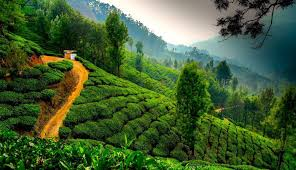
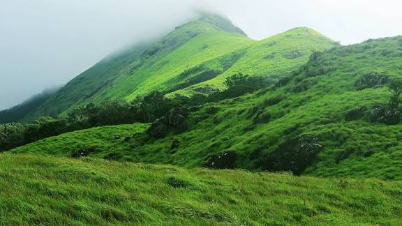
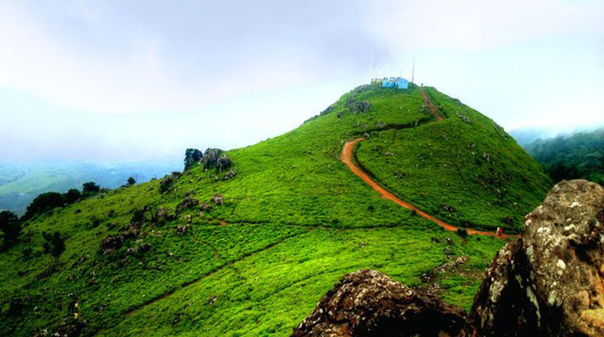
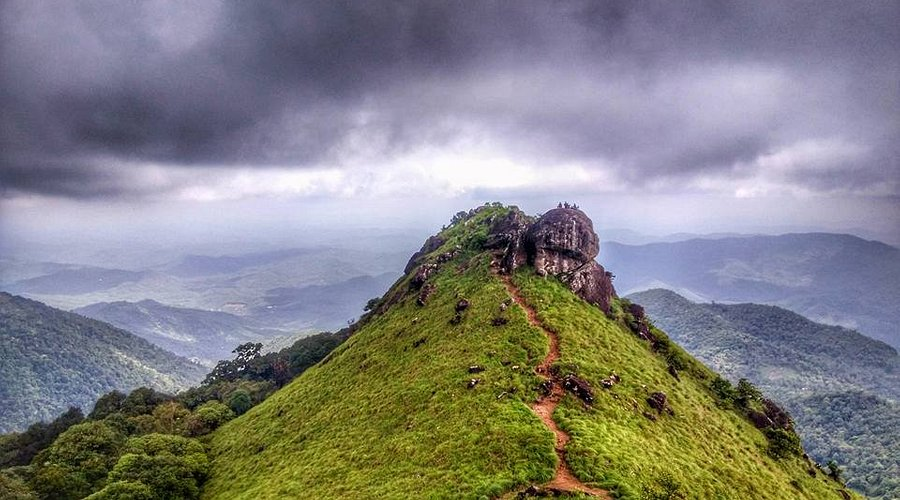
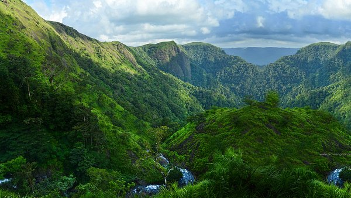

Munnar
Timing: 9:00 AM to 6:00 PM
Entry Fee:rs.50 (Eco points)
Famous hill station with tea plantations.
Nearby Restaurants:
- Rapsy Restaurant
- SN Restaurant
- Hotel Saravana Bhavan

Wayanad
Timing: 8:00 AM to 5:00 PM
Entry Fee: 100 (Wildlife Sanctuary)
Hill district with forests, waterfalls and wildlife.
Nearby Restaurants:
- Wilton Restaurant
- Udupi Restaurant
- 1980¡¯s A Nostalgic Restaurant

Chembra Peak
Timing: 6:00 AM to 5:00 PM
Entry Fee: Trekking permit required(approx rs.750 per group)
Chembra peak is the highest peak in Wayanad and part of the Western Ghats.
Nearby Restaurants:
- Wilton Restaurant(Kalpetta)
- 1980's A Nostalgic
Vagamon
Timing: Open all
Entry Fee: Free
History:Lesser-Known hill station with meadows,pine forests,and trekking trails.
Nearby Restaurants:
- Vagamon Heights Restaurant
- Hotel Pine View

ponmudi
Timing: 7:00 AM - 6:00 PM
Entry Fee:Free
History:Small hill station known for tea gardens,winding roads, and scenic viewpoints.
Nearby Restaurants:
- Hotel Hilltop
- Ponmudi View Restaurant

Ranipuram
Timing: 6:00 AM - 5:00 PM
Entry Fee:Free
History:Hill station known as Ooty of Kerala.
Nearby Restaurants:
- Ranipuram Resort Restaurant
- Local eateries near Kalpetta

Peermede
Timing: 8:00 AM - 6:00 PM
Entry Fee:Free
History:Tea gardens and pleasant climate.
Nearby Restaurants:
- peermede Hotel Restaurant
- Spice Garden Restaurant